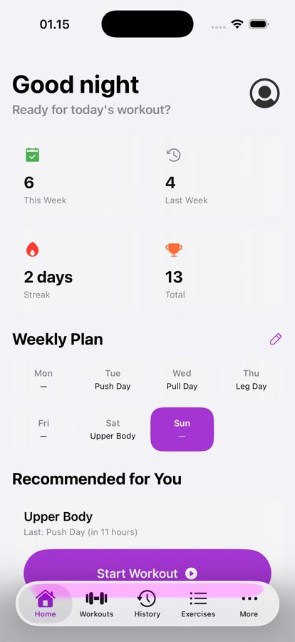
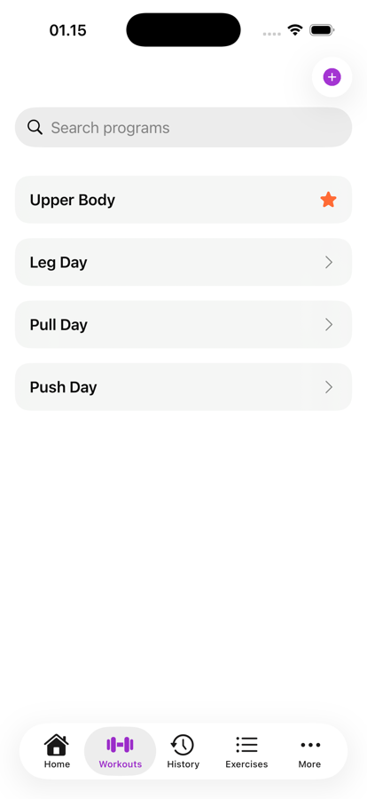
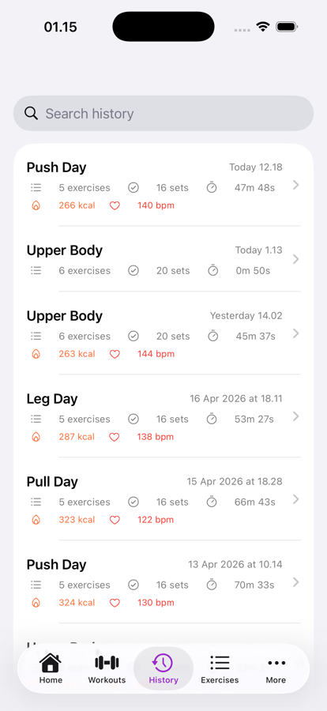
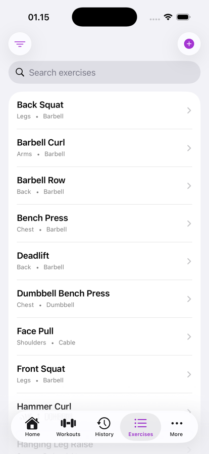
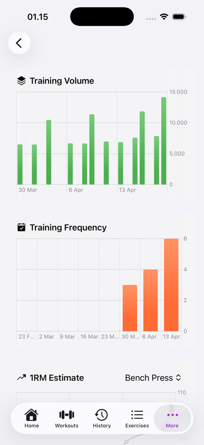

Plan your workout. Follow the flow.
Track your progress.
Iron Workout is a strength training app for iPhone. Plan workouts, track sets and reps in the gym, and review progress over time. One-time purchase — no subscription, no account required, no ads, and no data collection. Works fully offline.

Create workout templates with exercises, sets, reps, weight targets, rest timers, and supersets. Duplicate and favorite your go-to routines.
Workout timer, set-by-set tracking, rest countdown with haptic feedback, pause and resume. Add notes per exercise. Just follow the screen.
Automatic personal record detection for weight and reps. Volume charts, weekly frequency, estimated 1RM progression, and muscle group distribution.
See your current exercise, elapsed time, and set progress on the Lock Screen and Dynamic Island — without opening the app.
Weekly overview with workout count, streak, total volume, and a planner to map your training week ahead.
Workouts sync to HealthKit automatically. Calories burned and heart rate from Apple Watch show up in your workout history.
Clean, focused, and fast. No clutter, no upsells, no distractions between you and your next set.




No. Iron Workout is a one-time purchase with no subscription, no in-app purchases, and no hidden costs. You pay once and get all features forever, including future updates.
Yes. Iron Workout works 100% offline. All workout data is stored locally on your iPhone. There is no account to create, no cloud dependency, and no data sent to external servers.
Yes. Completed workouts automatically sync to Apple HealthKit, including workout duration and calories burned. If you have an Apple Watch, heart rate data also appears in your workout history.
You can create full workout programs with exercises, sets, reps, weight targets, rest timers, and supersets. During workouts, sets are tracked in real time with a haptic rest countdown and Live Activity on the Lock Screen. After workouts, you can review volume charts, weekly frequency, estimated 1RM progression, muscle group distribution, and automatically detected personal records.
Iron Workout is built for lifters who want a focused, distraction-free gym experience. Unlike apps that require monthly subscriptions and cloud accounts, Iron Workout is a one-time purchase that works offline and keeps all data on your device. It also features Live Activity on the Lock Screen and Dynamic Island, automatic personal record detection, and full Apple Health integration.
One-time purchase on the App Store. No subscription, no account required.
Download for iPhone